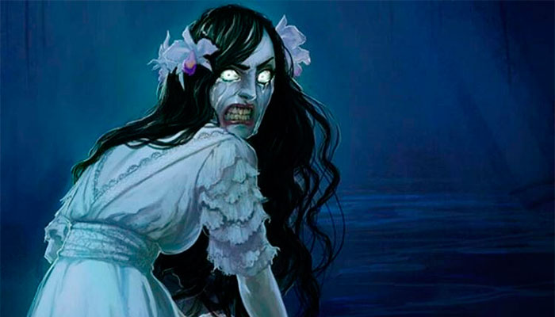
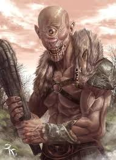
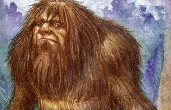

Tradición Oral Hondureña
Honduras posee una narrativa mística fascinante, donde la selva, los ríos y los cerros cobran vida a través de historias que han desafiado el paso del tiempo.

LA SUCIA
HONDURAS
Una mujer hermosa que aparece en los ríos. Al acercarse, se transforma en un ser horrendo que golpea sus pechos contra las piedras.

EL CÍCLOPE
HONDURAS
En las selvas de la Mosquitia habita un gigante de un solo ojo que protege la naturaleza y aterra a los cazadores furtivos.
LLUVIA DE PECES
HONDURAS
Fenómeno real envuelto en mito donde, tras las oraciones de un sacerdote, el cielo regala peces al pueblo de Yoro cada año.

EL SISIMITE
HONDURAS
El "Pie Grande" hondureño de las montañas que rapta mujeres y tiene los pies al revés para despistar a sus perseguidores.
CERRO BRUJO
HONDURAS
Un cerro en Tegucigalpa que protege sus secretos arruinando maquinaria y emitiendo ruidos de entes que impiden el paso.